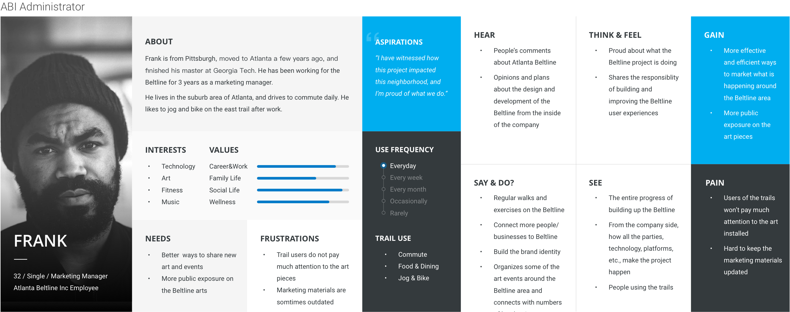
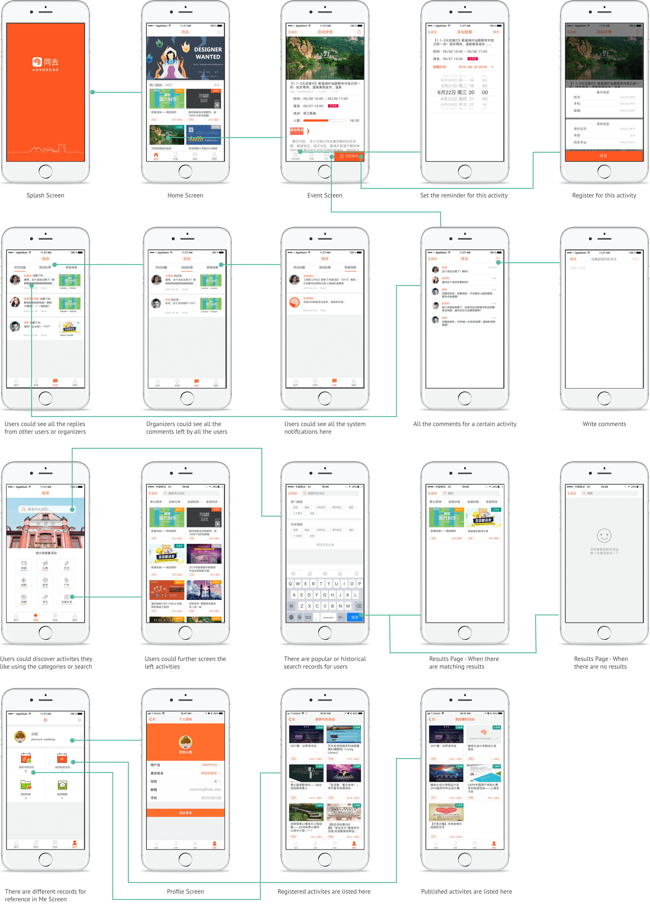

01. Overview
About Atlanta Beltline
The Atlanta BeltLine is a sustainable emerging system of parks, trails, transit and development that is reclaiming a 22-mile loop of historic rail lines around the city’s core.
 Learn more about Beltline
Learn more about Beltline
Problem
How might we improve the experience of Art on the Atlanta Beltline?
My Role
Michelle and I finished all the work together, spliting the work into half.
1) Completed the following research activities: observed on the Beltline trails, condcuted 11 semi-structured interviews and did competitive analysis on other similar projects around US.
2) Synthesized the research results into empathy maps, personas, user journeys and key insights.
3) Analyzed the Atlanta Beltline's current brand system and designed the new sub-brand system for our project.
4) Finished half of the wireframes and mockups.
5) Held feedback sessions and concept testing with target users. Iterated on the design.
Duration
September 2018 - December 2018
Project Team
Huaiwei Sun | Michelle Ma
Tools
Photoshop | Sketch | inVision | Framer
Process

02. Discover
Overview of Research
In order to capture users' current pain points and other unmet needs, we combined qualitative and quantitative research methods to collect both broad and in-depth data to better understand the users.

Observation
During the observation on both westside and eastside trails, we mainly found x pain points.
1. The art information is hard to get on the trail. Signage is missing or hard to find.
2. The physical touch points (brochure, booklet, flyers, signage, etc) can hardly add to the interaction between the art work and visitors.

Semi-structured Interviews
We talked to our client first, Chris Langley - Arts and Culture Program coordinator. Then we went to the eastside trail and recruited 10 other stakeholders. During the interviews, we collected the pain points and people's needs related to the experience of arts.


Stakeholder Relationship Map
Based on the interviews and online research, we grouped and mapped all the stakeholders onto this relationship map. The insights we got included:
1. Since Atlanta Beltline is a non-profit project, it's important to consider different stakeholders' incentives which might be totally different.
2. People's needs also vary a lot. In terms of visitors, there are already different groups, including frequent users like bikers, joggers and infrequent users like local or non-local visitors. It's important to segment clearly and focus on the targeted group.

Competitive Analysis
We studied 3 trails or public art exhibition programs around US and compared them with Atlanta Beltline using different indicators. The things Beltline should learn from them include:
1. Enhance the interactivity and accessibility of the arts. Stick to two of the Atlanta Beltline's principles: equitable and inclusive.
2. Rethink about the sub-brand: Art on the Atlanta Beltline. Ensure a consistent and strong brand presence in both digital and physical touch points.
3. Provide a coherent visiting experience. Fullfill different needs people may have during their visits on the Beltline trails.


03. Define
Synthesis of Findings
In order to capture users' current pain points and other unmet needs, we combined qualitative and quantitative research methods to collect both broad and in-depth data to better understand the users.


Empathy Maps & Personas
During the observation on both westside and eastside trails, we mainly found x pain points.



Current User Journeys
We talked to our client first, Chris Langley - Arts and Culture Program coordinator. Then we went to the eastside trail and recruited 10 other stakeholders. During the interviews, we collected the pain points and people's needs related to the experience of arts.


04. Design & Iterate
Ideation
- Firstly, we listed all the essential functions and features for meeting the product requirements.

Concept
A redesigned Art on the Atlanta Beltline website automating the information (arts, adjacent busuiness, history, events, parks, etc.) management process and extracting and bringing all the value of the information to the visitors.

Service Blueprint
Based on the information architecture, we came up with the wireframes and flows. However, we tweaked some functions and revised the information architecture in order to better satisfy the product requirement document.

Hifi Prototype & Iterations
After reaching consensus on wireframes and flows, we created hifi prototypes. We didn't use inVision or other softwares to make the prototype. We manually showed all the screens and interactions on my laptop during the team review.
Due to the limit of time and skillset we had, we didn't conduct user tests, whether it's benchmarking test or A/B test. Each time after knocking out the lofi wireframes or hifi prototypes, we just held quick and dirty internal discussion and review on all the screens. Since we were users ourselves, we were able to figure out the main issues in terms of usability.
If I could do it again now, I would conduct feedback session after wireframe phase and benchmarking test after hifi prototype phase. Feedback session would give me insights of how useful our features are to users. Benchmarking test and SUS score would help me evaluate the detailed and overall usability of the prototype.
With the help of the feedback from other team members, I conducted several iterations.


Final Design
1. Screens

2. User flow
Check the details of user flow here.
Use Case
Our design work was always revolved around the personas(users) and product requirement document. We tested our design and flow in our use cases to see if they could help users achieve their goals.
Check the details of use cases.

05. VALIDATE
Development
I exported all the assets and specs to the iOS developer Ruiyang Wang. After he finished 95% of the coding work, we spent several days together testing and debugging to ensure there were as few bugs as possible.
Launch and Publicity
When we were confident enough about our work, we launched it to the iOS store. I also designed introduction page on Tong Qu's website to introduce our new app. Check the introduction page here!
Several updates have been done after I graduated, so some design details are different from those in this project.

Project Impact
1. Objective Data:
In order to evaluate the impact of this update, I compared the analytics data from Nov. 2016 and data from Nov. 2017.
There is a huge improvement on usage data. Sessions(one session means that a user oepns the app and uses it for a certain amount of time once) have doubled. Active devices have went up to 1.4 times. Crashes have decreased by 93%.

2. Subjective Data:
I compared the ratings and reviews for old version and this new version from iOS store.
There is also a huge improvement on users' subjective feedback. Ratings from users have gone from 1.5 to 4.7. Most of the reviews spoke hightly of this update.